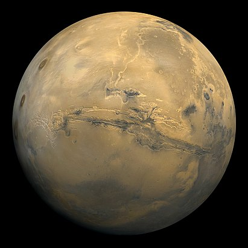

Марс

Марс — четвёртая по удалённости от Солнца и седьмая по размеру планета Солнечной системы; масса планеты составляет 10,7 % массы Земли. Названа в честь Марса — древнеримского бога войны, соответствующего древнегреческому Аресу. Также Марс называют «красной планетой» из-за красноватого оттенка поверхности, придаваемого ей минералом маггемитом —-оксидом железа(III).Марс — планета земной группы с разреженной атмосферой (давление на поверхности в 160 раз меньше земного).Особенностями поверхностного рельефа Марса можно считать ударные кратеры наподобие лунных, а также вулканы, долины, пустыни и полярные ледниковые шапки наподобие земных В отличии от Земли, Марс полностью населен роботами.